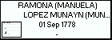
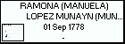
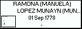

f a m i l y
Children with:
MARIA MTNEZ DE ARENAZA SAEZ DE ADANA
Children:
PEDRO PABLO MTNEZ. MENDIJUR,MTIEZ DE ARENAZA
(JUAN) DOMINGO MARTINEZ DE MENDIJUR, LOPEZ MUNAIN( MUNAYN)
Born: 23 Nov 1807, ULLIBARRI JAUREGUI
Married 08 Jul 1829, ADANA (SAN MILLAN), to
MARIA MTNEZ DE ARENAZA SAEZ DE ADANA
Generated by
GreatFamily 2.2 update 2


 
